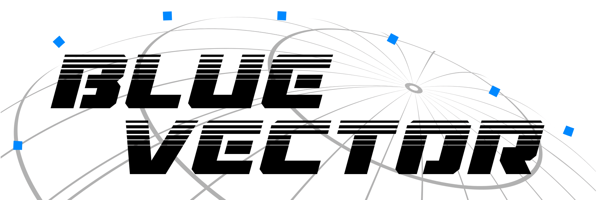

A multi-venture studio where grief becomes garment, firmware becomes ceremony, and precision engineering meets open-source conviction. Protective systems that don’t look like protection. Healing technologies that feel like fashion.
Problems don’t respect discipline boundaries. We work at the convergence of ecology and engineering, aesthetic and function, digital and biological, grief and release.
“Living dresses for the dying. Healing technologies that feel like fashion.”
No discipline silos. Every project is designed for convergence—where textile meets firmware, where memorial technology meets NFC authentication, where community education meets physical-digital integration.
We operate on 6-day sprint cycles with 1-week integration periods, using an H-O-X architecture for AI-triangulated decision making and radical transparency. Git as version-control backbone. Multi-AI coordination across Claude, GPT, Grok, and Gemini.
Therapeutic fashion with kevlar reinforcement, hydrogel cooling, and NFC-authenticated garments. Collections follow migration patterns, not fashion calendars. FDA pathway active.
Digital legacy platform: cyberscrubbing, NFC memorial tokens, simulant resurrection. Memory embeddings, ceremony orchestration, and voxel accessibility interfaces.
NFC infrastructure end-to-end: ACR122U readers with signed Windows drivers, NTAG chip programming, cryptographic token binding, and physical-digital authentication.
Behavioral auditing AI for home safety. Baseline learning, kinetic signature analysis, isolation/neglect pattern detection, and agentic intervention protocols with evidence chains.
Multi-venture CRM and operations hub: contacts, organizations, grants, media, events, and streaming. Real-time Supabase backbone with OBS overlay integration.
Teen makerspace program at Hobe Sound Public Library. 4-session STEAM curriculum teaching NFC programming and textile craftsmanship to ages 10+.
Open-source Continuous Extraction Offset Precision drill. Hollow-bore bit evacuates 100% of debris via vacuum-assisted reverse circulation. Swiss-turned to ±0.0005” tolerance.
NVIDIA Isaac GR00T framework in Unity for humanoid robotics simulation. ROS data pipelines and sensor capture for embodied AI research.
Full-stack systems powering multi-venture operations—from real-time CRM to streaming radio and design token delivery.
Operations hub managing contacts, organizations, grants, media, streams, and events. Trigram-based fuzzy search, Ghost Factory transparency scoring, and real-time OBS overlay integration for live broadcasts.
Memorial technology microservices: simulant creation and activation, NFC token management, ceremony orchestration, cyberscrubbing workflows, and memory embedding retrieval.
Streaming radio infrastructure with state management, OBS browser source integration, and real-time overlays for live broadcasts and community events.
Containerized deployment-ready service. Git-tracked with active development for production deployment across the BlueVector ecosystem.
Physical NFC taps trigger Slack workspace messages. Physical-to-digital interaction layer connecting hardware tokens to real-time team communication channels.
CSS variable delivery system serving brand-consistent design tokens across all ventures. Centralised style governance for the entire BlueVector ecosystem.
End-to-end NFC hardware infrastructure—from signed device drivers to chip programming, reader deployment, and cryptographic physical-digital authentication.
Deployment and integration of ACR122U NFC readers with ACS Unified Driver v4.2.8.0 (Windows-signed). Complete PCSC-based reader infrastructure for authentication and interactive applications.
Provisioning NTAG213, 215, and 216 chips in sticker, coin, and card form factors. URL writing, contact card encoding, custom data payloads, and authentication binding across all ventures.
PBKDF2-SHA256 hashed NFC token binding for secure physical-to-digital authentication. Cryptographic verification connecting physical tokens to Durandal memorial records and garment provenance.
Applied artificial intelligence from behavioral safety monitoring to humanoid robotics—always trauma-informed, always in service of real-world outcomes.
Behavioral auditing AI for home safety. Learns baseline behaviour, then continuously audits for isolation patterns, escalating aggression, self-harm markers, and environmental degradation. Agentic intervention with evidence chains.
NVIDIA Isaac GR00T framework integration in Unity for humanoid robotics simulation, training, and deployment. 1.7GB ROS bag sensor capture for embodied AI training pipelines.
Python-based cognitive assistance system providing structured support for executive function, task management, and decision-making. Full ML stack: NumPy, PyTorch, TensorFlow, Matplotlib.
Architecture coordinating Claude, GPT, Grok, Gemini, and Copilot for triangulated decision-making. Git-backed context with NotebookLM synchronization and Akiflow task generation.
Local-first LLM inference via Ollama powering conversational simulants of deceased persons. ChromaDB vector retrieval for memory-accurate personality reconstruction.
AI is a coordination tool, not a replacement. Every system serves a specific human need—whether monitoring a child’s safety, assisting cognitive function, preserving the dead’s memory, or triangulating complex decisions across multiple model perspectives.
Local-first where possible (Ollama, ChromaDB). Cloud-augmented where necessary. Physics-layer verification before execution. Trauma-informed design as default.
DONN was built to be the “eyes” for those without human empathy or oversight—the canary that never stops watching.
Hands-on makerspace programs where textile craftsmanship meets NFC technology—teaching the next generation to build at the physical-digital intersection.
NFC technology overview. ACR122U reader setup. First NTAG programming: URLs, contact cards, custom data payloads. Understanding physical-digital bridges.
Textile construction through needle felting techniques. Embedding NFC tags into textile substrates. Supervised sharp-tool safety protocols.
Decorative embroidery techniques combined with NFC chip linking. Git version control introduction. GitHub collaboration basics for project tracking.
Final project assembly and public showcase. Students present NFC-embedded textile creations to community. Peer review and celebration of convergence skills.
NFC-enabled alternate reality game in downtown Bartow, FL. Location-based gameplay combining Pokémon GO-style exploration with detective mechanics and STEM education. Hidden NFC tags trigger clues, puzzles, and narrative progression.
Open-source precision instruments, bio-computation research, healing center infrastructure, and organizational transparency systems.
Continuous Extraction Offset Precision drill. 1/4” hollow-bore bit evacuates 100% of drilling debris through its center via reverse circulation. Stainless clamshell handpiece in saxophone-profile offset geometry. Micro-chain drive system. Autoclavable fluid-path components.
Physical anchor for therapeutic work. Trinaural photoresonance therapy combined with an FDA-compliant cosmetics laboratory and NFC token-activated healing ceremony systems.
Transparency scoring engine for organizations. Scans entities for operational legitimacy, financial transparency, and public accountability across grant ecosystems and nonprofit sectors.
Provisional patent exploring systemic approaches to poverty reduction through technology access, community infrastructure, and convergence engineering methodologies.
“The hole is not the problem. What you leave behind is.”
The CEOP drill is engineered for open-source release through Kickstarter—available as both kit and assembled unit. Swiss-turned hollow-bore bit machined to ±0.0005” tolerance with gundrilling, gear hobbing, and heat treatment. Production cost under $100 at scale.
Target applications: surgery, precision manufacturing, aerospace debris control. No debris contacts the pump. Precision engineering shouldn’t be locked behind proprietary walls when lives are at stake.
Whether it’s therapeutic wearables, memorial technology, NFC systems, or community programs—the best work happens where disciplines converge.
Request a Briefing